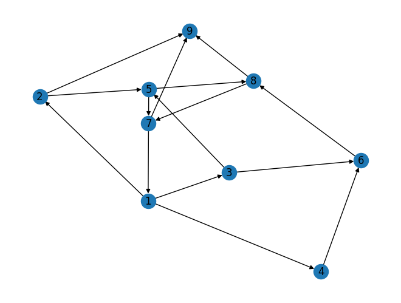

NetworkxDigraph#
pip install networkx
Looking in indexes: https://pypi.org/simple, https://us-python.pkg.dev/colab-wheels/public/simple/
Requirement already satisfied: networkx in /usr/local/lib/python3.10/dist-packages (3.1)
Mengimport library NetworkX sebagai nx dan Membuat sebuah directed graph#
import networkx as nx
G = nx.DiGraph()
Menambahkan edge-edge pada graph#
G.add_edge(1, 2)
G.add_edge(1, 3)
G.add_edge(1, 4)
G.add_edge(2, 5)
G.add_edge(3, 5)
G.add_edge(3, 6)
G.add_edge(4, 6)
G.add_edge(5, 7)
G.add_edge(6, 8)
G.add_edge(7, 9)
G.add_edge(8, 9)
G.add_edge(2, 9)
G.add_edge(5, 8)
G.add_edge(8, 7)
G.add_edge(7, 1)
nx.draw(G, with_labels=True)

Menghitung pagerank menggunakan method nx.pagerank()#
nx.pagerank(G, alpha=0.85)
{1: 0.09689915195822765,
2: 0.06263175206993643,
3: 0.06263175206993643,
4: 0.06263175206993643,
5: 0.08841462743227774,
6: 0.11503339715277891,
7: 0.1452300660820026,
8: 0.1705332087914881,
9: 0.19599429237341554}
Implementasi algoritma PageRank dengan menggunakan iterasi secara manual menggunakan library NetworkX#
def pagerank_iter(G, alpha=0.85, max_iter=100, tol=1.0e-6):
pr = {node: 1/G.number_of_nodes() for node in G.nodes()}
print(f"Iteration 0: {pr}")
for i in range(max_iter):
old_pr = pr.copy()
diff = 0
for node in G.nodes():
incoming_edges = list(G.in_edges(node))
if len(incoming_edges) == 0:
pr[node] = 0
else:
incoming_weights = sum([old_pr[edge[0]] / len(G.out_edges(edge[0])) for edge in incoming_edges])
pr[node] = (1 - alpha) / G.number_of_nodes() + alpha * incoming_weights
diff += abs(pr[node] - old_pr[node])
print(f"Iteration {i+1}: {pr}")
if diff < tol:
break
return pr
pagerank_iter(G, alpha=0.85, max_iter=100)
Iteration 0: {1: 0.1111111111111111, 2: 0.1111111111111111, 3: 0.1111111111111111, 4: 0.1111111111111111, 5: 0.1111111111111111, 6: 0.1111111111111111, 7: 0.1111111111111111, 8: 0.1111111111111111, 9: 0.1111111111111111}
Iteration 1: {1: 0.06388888888888888, 2: 0.04814814814814815, 3: 0.04814814814814815, 4: 0.04814814814814815, 5: 0.1111111111111111, 6: 0.15833333333333333, 7: 0.1111111111111111, 8: 0.15833333333333333, 9: 0.15833333333333333}
Iteration 2: {1: 0.06388888888888888, 2: 0.03476851851851852, 3: 0.03476851851851852, 4: 0.03476851851851852, 5: 0.0575925925925926, 6: 0.07805555555555554, 7: 0.13118055555555555, 8: 0.19847222222222222, 9: 0.1516435185185185}
Iteration 3: {1: 0.07241840277777778, 2: 0.03476851851851852, 3: 0.03476851851851852, 4: 0.03476851851851852, 5: 0.04621990740740741, 6: 0.06099652777777778, 7: 0.12549421296296295, 8: 0.10749074074074072, 9: 0.1715457175925926}
Iteration 4: {1: 0.07000170717592592, 2: 0.037185214120370375, 3: 0.037185214120370375, 4: 0.037185214120370375, 5: 0.04621990740740741, 6: 0.06099652777777778, 7: 0.08199369212962962, 8: 0.08815717592592592, 9: 0.13046189236111108}
Iteration 5: {1: 0.051513985821759256, 2: 0.03650048369984568, 3: 0.03650048369984568, 4: 0.03650048369984568, 5: 0.04827409866898149, 6: 0.0640778146701389, 7: 0.07377692708333333, 8: 0.08815717592592592, 9: 0.10478450159143518}
Iteration 6: {1: 0.04802186067708333, 2: 0.03126229598283179, 3: 0.03126229598283179, 4: 0.03126229598283179, 5: 0.0476920778115355, 6: 0.06320478338396991, 7: 0.07464995836950232, 8: 0.09164930107060187, 9: 0.10100136601803628}
Iteration 7: {1: 0.048392898973705155, 2: 0.03027286052517361, 3: 0.03027286052517361, 4: 0.03027286052517361, 5: 0.04323961825207369, 6: 0.0565260940447772, 7: 0.07588675269157505, 8: 0.09065986561294367, 9: 0.10063032772141448}
Iteration 8: {1: 0.04891853656058606, 2: 0.0303779880425498, 3: 0.0303779880425498, 4: 0.0303779880425498, 5: 0.042398598113064234, 6: 0.05526456383626303, 7: 0.07357394730929906, 8: 0.0830906843618586, 9: 0.10031494516928591}
Iteration 9: {1: 0.04793559427311877, 2: 0.030526918692166054, 3: 0.030526918692166054, 4: 0.030526918692166054, 5: 0.042487956502834, 6: 0.05539860142091767, 7: 0.06999961171850888, 8: 0.08166095012554253, 9: 0.09615978004499234}
Iteration 10: {1: 0.04641650164703294, 2: 0.030248418377383655, 3: 0.030248418377383655, 4: 0.030248418377383655, 5: 0.04261454755500782, 6: 0.055588487999178385, 7: 0.06942995198372669, 8: 0.08181285938815114, 9: 0.09409634589455909}
Iteration 11: {1: 0.04617439625975051, 2: 0.02981800879999267, 3: 0.02981800879999267, 4: 0.02981800879999267, 5: 0.04237782228744277, 6: 0.05523340009783083, 7: 0.06954831461750922, 8: 0.08202806417684663, 9: 0.09380043931010279}
Iteration 12: {1: 0.046224700379108086, 2: 0.029749412273595982, 3: 0.029749412273595982, 4: 0.029749412273595982, 5: 0.04201197414666044, 6: 0.054684627886657323, 7: 0.06953916841398966, 8: 0.08162563122198604, 9: 0.09375928139426479}
Iteration 13: {1: 0.04622081324261228, 2: 0.02976366510741396, 3: 0.02976366510741396, 4: 0.02976366510741396, 5: 0.041953667099223255, 6: 0.054597167315501544, 7: 0.06921264894834142, 8: 0.08100368938265609, 9: 0.09355520672823464}
Iteration 14: {1: 0.04608204246971177, 2: 0.02976256375207348, 3: 0.02976256375207348, 4: 0.02976256375207348, 5: 0.041965782007968536, 6: 0.05461533967861947, 7: 0.06892354317146539, 8: 0.08090456740201288, 9: 0.09315816812799155}
Iteration 15: {1: 0.04595917251453946, 2: 0.02972324536641834, 3: 0.02972324536641834, 4: 0.02972324536641834, 5: 0.04196484585592913, 6: 0.054613935450560355, 7: 0.06888656516590877, 8: 0.08092516274687986, 9: 0.09299270325502618}
Iteration 16: {1: 0.04594345686217789, 2: 0.029688432212452848, 3: 0.029688432212452848, 4: 0.029688432212452848, 5: 0.04193142522812226, 6: 0.05456380450885005, 7: 0.06889492032286049, 8: 0.08092357128841285, 9: 0.09296903031032963}
Iteration 17: {1: 0.045947007803882375, 2: 0.02968397944428374, 3: 0.02968397944428374, 4: 0.02968397944428374, 5: 0.04190183404725159, 6: 0.05451941773754405, 7: 0.06888004018619409, 8: 0.08086675622114117, 9: 0.0929571092917503}
Iteration 18: {1: 0.045940683745799155, 2: 0.029684985544433343, 3: 0.029684985544433343, 4: 0.029684985544433343, 5: 0.041898049194307854, 6: 0.054513740458128436, 7: 0.06884331753073358, 8: 0.08081645121366104, 9: 0.09292474640360474}
Iteration 19: {1: 0.045925076617228444, 2: 0.029683193727976433, 3: 0.029683193727976433, 4: 0.029683193727976433, 5: 0.04189890437943501, 6: 0.05451502323581918, 7: 0.06882032934005344, 8: 0.08081001696365667, 9: 0.09288818723941855}
Iteration 20: {1: 0.04591530663618938, 2: 0.02967877170821473, 3: 0.02967877170821473, 4: 0.02967877170821473, 5: 0.04189738133544664, 6: 0.05451273866983662, 7: 0.06881795823748063, 8: 0.08081147077837286, 9: 0.09287492118013344}
Iteration 21: {1: 0.045914298917595936, 2: 0.029676003546920328, 3: 0.029676003546920328, 4: 0.029676003546920328, 5: 0.04189362261864919, 6: 0.05450710059464045, 7: 0.06881792881503995, 8: 0.08080888160359262, 9: 0.09287265197439568}
Iteration 22: {1: 0.04591428641305865, 2: 0.029675718026652184, 3: 0.029675718026652184, 4: 0.029675718026652184, 5: 0.04189126968154895, 6: 0.05450357118899009, 7: 0.06881523096111944, 8: 0.08080249178503696, 9: 0.09287036260202663}
Iteration 23: {1: 0.04591313982514243, 2: 0.029675714483699954, 3: 0.029675714483699954, 4: 0.029675714483699954, 5: 0.041891026989321026, 6: 0.05450320715064821, 7: 0.06881151528996568, 8: 0.08079849179196655, 9: 0.0928663789951103}
Iteration 24: {1: 0.04591156066490208, 2: 0.029675389617123692, 3: 0.029675389617123692, 4: 0.029675389617123692, 5: 0.04189102397781163, 6: 0.05450320263338411, 7: 0.0688097121487139, 8: 0.08079807921517909, 9: 0.09286309833206036}
Iteration 25: {1: 0.04591079432987008, 2: 0.029674942188388925, 3: 0.029674942188388925, 4: 0.029674942188388925, 5: 0.041890747841221807, 6: 0.05450278842849938, 7: 0.06880953552368774, 8: 0.0807980740956131, 9: 0.09286201858359874}
Iteration 26: {1: 0.04591071926423396, 2: 0.02967472506012986, 3: 0.02967472506012986, 4: 0.02967472506012986, 5: 0.041890367526797256, 6: 0.054502217956862546, 7: 0.0688094159898215, 8: 0.0807976046634104, 9: 0.09286175118493481}
Iteration 27: {1: 0.045910668462340806, 2: 0.029674703791532957, 3: 0.029674703791532957, 4: 0.029674703791532957, 5: 0.04189018296777705, 6: 0.05450194111833224, 7: 0.06880905484750492, 8: 0.08079695812888868, 9: 0.0928614085948454}
Iteration 28: {1: 0.04591051497685626, 2: 0.029674689397663233, 3: 0.029674689397663233, 4: 0.029674689397663233, 5: 0.041890164889469686, 6: 0.05450191400087119, 7: 0.0688087016327496, 8: 0.08079664437855433, 9: 0.09286097129303544}
Iteration 29: {1: 0.04591036486058525, 2: 0.02967464591010928, 3: 0.02967464591010928, 4: 0.02967464591010928, 5: 0.04189015265468042, 6: 0.054501895648687286, 7: 0.06880856060557687, 8: 0.08079661364543181, 9: 0.0928606817154777}
{1: 0.04591036486058525,
2: 0.02967464591010928,
3: 0.02967464591010928,
4: 0.02967464591010928,
5: 0.04189015265468042,
6: 0.054501895648687286,
7: 0.06880856060557687,
8: 0.08079661364543181,
9: 0.0928606817154777}